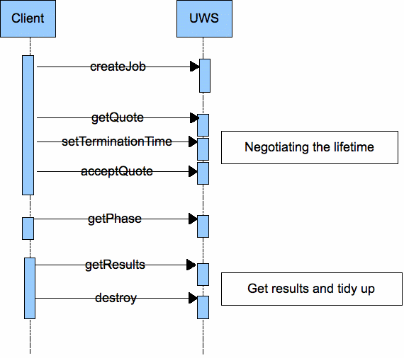

1. Introduction
The Universal Worker Service (UWS)
pattern defines how to build asynchronous, stateful, job-oriented services (the italicized terms are defined
in sub-sections of this introduction). It does so in a way that
allows for wide-scale reuse of software and support from software
toolkits.
Section 2 of this document describes
the pattern and lists the aspects that are common to all its
applications. Any such application would involve a service contract
that embodies the pattern and fixes the issues left undefined in the
pattern itself. The contract would include the XML schemata (XSD and
WSDL) for the application. It is intended that each such contract
cover a family of related applications, such that the implementations
may be widely reused.
Section 3 outlines several possible
applications of the pattern. These use-cases may be expanded into
full IVOA standards that are siblings of the current document.
Section 4 describes the preferred
method of creating a synchronous facade to a UWS system.
1.1. Synchronous, stateless services
Simple web services are synchronous and stateless. Synchronous means that the client waits for
each request to be fulfilled; if the client disconnects from the
service then the activity is abandoned. Stateless means that
the service does not remember results of a previous activity (or, at
least, the client cannot ask the service about them).
Synchronous, stateless services work
well when two criteria apply.
-
The length of each activity is
less than the “attention span” of the connection.
-
The results of each activity are
compact enough to be easily passed back to the client via the
connection on which the request was made (and possibly pushed back
to the service as parameters of the next activity).
There are various limits to the
attention span.
-
HTTP assumes that the start of a
reply quickly follows its request, even if the body of the reply
takes a long time to stream. If the service takes too long to
compute the results and to start the reply, then HTTP times out at
the request is lost.
-
A client runs computer which
will not stay on-line indefinitely.
-
A network with finite
reliability will eventually break communications during an activity.
-
A service is sometimes shut down
for maintenance.
Synchronous, stateless services, in
short, do not scale well.
1.2. Some IVO activities that outgrow synchronous, stateless services
These cases are examples. They are
not a complete list!
-
An ADQL [1] service gives access
to a large object-catalogue. Most queries run in less than a minute,
but some legitimate queries involve a full-table traverse and take
hours or days. The service needs to run these special cases in a
low-priority queue.
-
An object-finding service runs
the SExtractor application on a list of images. Normally, the list
is short and the request is quickly satisfied. Occasionally, a list
of 10,000 images is sent in the expectation that the work will be
finished over the weekend.
-
A cone-search [2] request on a
rich catalogue raises 10,000,000 rows of results, but the client is
connected via a slow link and cannot read all the results in a
reasonable time. The client needs the service to send the results
into storage over a faster link. This could mean sending them to
VOSpace, or simply holding them temporarily until the user can
retrieve them on a fast link.
-
An ADQL service allows users to
save query results into new tables such that they can be the target
of later queries. However, space is limited and the results tables
can only be kept for a short time. The client and service negotiate
the lifetime of the results tables.
-
A service performs image
stacking on a list of fields. Each field can be processed by a
synchronous service but the list is long and the user wants to
retrieve the results of the early fields before the last fields are
processed.
1.3. Asynchronous and stateful services
Services can be made to scale better
by making them asynchronous and stateful. Asynchronous
means that a client makes two or more separate requests to the
service in the course of one activity, and that the client and
service may be disconnected, possibly for days or more, in between
those requests. Stateful means that the service stores state
information about the activity and the client addresses requests to
this state.
Web services that are asynchronous
are almost always stateful. Most of special extra arrangements for
asynchronous activities are actually managing the state of the
activity.
There is an important class of
stateful services where the state is peculiar to one job or session
and the job is “owned” by one user. These, for the purpose of
this document, are called job-oriented services. There are
stateful services that are not job-oriented (e.g. a service managing
a shared, client-writeable DB table), but UWS does not apply to
these.
For the purpose of this discussion,
let the term job refer to the work specified by the JDL
instructions and the term resource refer to the state of the
job as recorded by the service. Both have a finite duration. The lifetime of the resource – i.e. the time from inception
until the service forgets the state – is generally finite and must
be at least as long the duration of the job.
1.4. Job description language, service contracts and universality
Consider the web-service operation
that starts off a job. This operation must express what is to be done
in the activity: it must carry parameters in some form.
The parameters may be expressed as a
list. E.g., a cone search service takes a list of three parameters:
RA, DEC, RADIUS. Alternatively, the parameters may be arranged as an
XML document (e.g. ADQL, CEA). The rules for setting and arranging
the parameters for a job are called the Job-Description Language (JDL).
The combination of the UWS pattern, a
JDL and details of the job state visible to the client defines a
service contract; for a SOAP service, this contract can be captured
in WSDL. Changing the JDL changes the contract. Thus, it is not
meaningful to “implement UWS” in isolation; any implementation
standard must specify the rest of the contract.
If the JDL is very general, a single
service-contract can be reused for many kinds of service. AstroGrid’s
CEA exploits this: one JDL covers all services offering parameterized
applications and even ADQL services. In the limit, a
sufficiently-general JDL turns a specialized worker service into a
universal worker service.
2. Universal Worker Service pattern
2.1. Objects within a UWS
A UWS consists logically in a set of
objects that may be read and written to in order to control jobs.
In a SOAP binding of UWS, these
components are exposed as properties of the object that lives at the
endpoint registered for the service. In a REST binding, the
components are distinct web-resources each with its own URI.
The following sub-sections explain the semantics of the objects. The
UML diagram shows the relationships more succinctly.

2.1.1.
Job list
The Job List is the outermost object:
it contains all the other objects in the UWS. The immediate children
of the job list are Job objects (see next sub-section).
The job list may be read to find the
extant jobs.
The job list may be updated to add a
new job.
The job list itself does not allow
jobs to be deleted. Instead, when a job is destroyed by an action on
its job object, then the list updates itself accordingly.
2.1.2. Job
A Job object contains the state of
one job. The state is a collection of other objects. Each Job
aggregates
-
Exactly one Execution Phase.
-
Exactly one Execution Duration.
-
Exactly one Deletion Time
-
Exactly one Quote.
-
Exactly one Results List.
-
Zero or one Error.
2.1.3. Execution Phase
The job is treated as a state machine
with the Execution Phase naming the state. The phases are
-
PENDING: the job is accepted by
the service but not yet committed for execution by the client. In
this state, the job quote can be read and evaluated. This is the
state into which a job enters when it is first created.
-
QUEUED: the job is committed for
execution by the client but the service has not yet assigned it to a
processor. No Results are produced in this phase.
-
EXECUTING: the job has been
assigned to a processor. Results may be produced at any time during
this phase.
-
COMPLETED: the execution of the
job is over. The Results may be collected.
-
ERROR: the job failed to
complete. No further work will be done nor Results produced. Results
may be unavailable or available but invalid; either way the Results
should not be trusted.
-
ABORTED: the job has been
manually aborted by the user, or the system has aborted the job due
to lack of or overuse of resources.
2.1.4. Execution Duration
An Execution Duration object defines
the duration for which a job shall run. This represents the
“computation time” that a job is to be allowed, although because
a specific measure of CPU time may not be available in all
environments, this duration is defined in real clock seconds. An
execution duration of 0 implies unlimited execution duration.
When the execution duration has been
exceeded the service will automatically abort the job, which has the
same effect as when a manual “Abort” is requested.
Specifically, when a job is aborted:
-
if the job is still executing,
the execution is aborted.
-
any previously generated results
of the job are retained.
When a job is created, the service
sets the initial execution duration. The client may write to an
Execution Duration to try to change the job's cpu time allocation.
The service may forbid changes, or may set limits on the allowed
execution duration.
2.1.5. Destruction Time
The Destruction Time object
represents the instant when the job shall be destroyed. The
Destruction Time is an absolute time.
Destroying a job implies;
-
if the job is still executing,
the execution is aborted.
-
any results from the job are
destroyed and storage reclaimed.
The Destruction Time may be viewed as
a measure of the amount of time that a service is prepared to
allocate storage for a job – typically this will be a longer
duration that the amount of CPU time that a service would allocate.
When a job is created the service
sets the initial Destruction Time. The client may write to the
Destruction Time to try to change the life expectancy of the job. The
service may forbid changes, or may set limits on the allowed
destruction time.
2.1.6. Quote
A Quote object predicts when the job
is likely to complete. The intention is that a client creates the
same job on several services, compares the quotes and then accepts
the best quote.
Quoting for a computational job is
notoriously difficult. A UWS implementation must always provide a
quote object, in order that the two-phase committal of jobs be
uniform across all UWS, but it may supply a “don't know” answer
for the completion time.
2.1.7. Error
The error object gives a human
readable error message (if any) for the underlying job. This object
is intended to be a detailed error message, and consequently might be
a large piece of text such as a stack trace. When there is an error
running a job a summary of the error should be given using the
optional errorSummary element of the JobSummary type.
2.1.8. Results List
The Results List object is a
container for formal results of the job. Its children may be any
objects resulting from the computation that may be fetched from the
service when the job has completed.
Reading the Results List itself
enumerates the available or expected result objects.
The children of the Results List may
be read but not updated or deleted. The client may not add anything
to the Results List.
2.2. Bindings
REST binding
Resources and URIs
In a REST (Representational State
Transfer) binding of UWS, each of the objects defined above is
available as a web resource with its own URI. These URIs must form a
hierarchy as follows:
/{jobs} the Job List
/{jobs}/(job-id) a Job
/{jobs}/(job-id)/phase the Phase of
(job-id)
/{jobs}/(job-id)/executionduration the
maximum execution duration of (job-id)
/{jobs}/(job-id)/destruction the
destruction instant for (job-id)
/{jobs}/(job-id)/error any error
message associated with (job-id)
/{jobs}/(job-id)/quote the Quote for
(job-id)
/{jobs}/(job-id)/results the Results
List for (job-id)
The service implementor is free to
choose the names given in parentheses above; the other names are part
of the UWS standard.
The URI for the Job List, in its
absolute form is the root URI for the whole UWS. This URI should be
given as the access URL in the UWS' registration.
2.2.1. Representations of resources
For each of the resources, HTTP GET
fetches a representation.
The representation of the Job List is
a list of links to extant jobs. The list may be empty if the UWS is
idle.
The representation of a Job is a list
of links to its Phase, Execution Duration, Destruction Time, Error,
Quote and Results List.
The representation of a Results List
is a list of links to the resources representing the results. These
resources may have any URI and any MIME type. A sensible default for
their URIs is to make them children of /{jobs}/(job-id)/results, but
this is not required. It may sometimes be easier for a service
implementor to point to a resource on some web server separate from
that running the UWS. Therefore, a client must always parse the
Results List to find the results. Where a protocol applying UWS
specifies standard results it must do so by naming those results; the
names then appear in the Results List in addition to the URIs. Not
all results need to be named; sometimes the meaning of the result is
obvious from the context and the name is omitted.
HTTP allows multiple representations
of a resource distinguished by their MIME types and selected by the
HTTP headers of a GET request. UWS exploits this to support both web
browsers and rich clients in the same tree of resources.
A UWS should return HTML or XHTML to
clients that accept these types. These clients are assumed to be web
browsers and the UWS is generating its own user interface. The HTML
interface generated should allow full control of the UWS via the use
of HTML forms and appropriate links.
Clients which are assumed to be part
of remote applications that drive UWS without showing the details to
their users should accept only application/xml. A UWS must therefore
return XML representations of the resources.
The XML schemata for the lists of
links, and for the Phase, Execution Duration and Quote documents, are
detailed in Appendix A of this specification. They should not vary
between UWS installations.
2.2.2. State changing requests
Certain of the UWS' resources accept
HTTP POST and DELETE messages to change the state of the service –
This is the fundamental way that a client controls the execution of a
job. In most of the cases where a job subobject is set the response
will have a http 303 “See other” status and a Location header
that points back to the main job summary obtained at the /{jobs}/(job-id)
URI. The job summary contains the values of the main parameters
within the returned XML (or XHTML). This mode of operation was chosen
(as opposed to returning only the sub-object being altered) as it
makes for a more natural user interface – especially in the case of
the XHMTL interface. A client that wants to obtain only the value of
a particular sub-object can at any time request that sub-object with
a HTTP GET.
Creating a Job
POSTing a request to the Job List
creates a new job (unless the service rejects the request). The
response when a job is accepted must have code 303 “See other”
and the Location header of the response must point to the created
job.
This initial POST will in most cases
carry parameters for the protocol that is using the UWS pattern, as
detailed in section 3.
Deleting a Job
Sending a HTTP DELETE to a Job
resource destroys that job, with the meaning noted in the definition
of the Job object, above. No other resource of the UWS may be
directly deleted by the client. The response to this request must
have code 303 “See other” and the Location header of the response
must point to the Job List at the /{jobs} URI.
Posting a request with a parameter
ACTION=DELETE to the Job also destroys the job, the response being as
for a deletion. This action supports web browsers which typically
cannot send DELETE requests.
Changing the Destruction
Time
The Destruction Time may be changed
by POSTing to /{jobs}/(job-id)/destruction. In this case, the body
of the posted request is of type application/x-www-form-urlencoded and
contains the parameter named DESTRUCTION whose value is the new
destruction time in ISO8601 format; i.e. this request is what an HTML
form sends.
The
response to this request must have code 303 “See other” and the
Location header of the response must point to the /{jobs}/(job-id)
URI so that the client receives the value that the service has
actually set the Destruction Time to within the Job summary response.
Changing the Execution
Duration
The Execution Duration may be changed
by POSTing to /{jobs}/(job-id)/termination. In this case, the body
of the posted request is of type application/x-www-form-urlencoded and
contains the parameter named TERMINATION whose value is the new
executionduration in seconds.
The
response to this request must have code 303 “See other” and the
Location header of the response must point to the
/{jobs}/(job-id)/URI so that the client receives the value that the
service has actually set the Execution Duration to – the service is
free to override the request if it needs.
Starting a Job
A
job may be started by POSTing to the /{jobs}/(job-id)/phase URI. The
POST contains a single parameter PHASE=RUN which instructs the UWS to
attempt to start the job. The response to this request must have code
303 “See other” and the Location header of the response must
point to the /{jobs}/(job-id) URI so that the client receives the
phase that the job has been set to. Typically a UWS will put a job
into a QUEUED state on receipt of this command, but depending on how
busy the server is, the job might be put almost immediately (and
without client intervention) into an EXECUTING state.
Aborting a Job
A
job may be aborted by POSTing to the /{jobs}/(job-id)/phase URI. The
POST contains a single parameter PHASE=ABORT which instructs the UWS
to attempt to abort the job. The response to this request must have
code 303 “See other” and the Location header of the response must
point to the /{jobs}/(job-id) URI so that the client receives the
phase that the job has been set to.
2.2.3. Message pattern
The REST binding results in the
message pattern shown in figure 2.
Illustration 2:
Typical calling sequence for the REST binding of UWS

2.3. SOAP binding
Resources and URIs
For a SOAP-bound UWS there is only
one web resource and therefore one URI. This resource corresponds
roughly to the Job List object of the UWS and all the other objects
are accessed via methods on the Job List.
The single URI of a SOAP-bound UWS
must be registered as its access URL.
Since the SOAP binding has only a
single URI it needs a different way to indicate the job to which a
request applies. Job-specific requests and reponses must carry a SOAP
header containing a WS-Addressing structure. In this structure, the
wsa:ResourceIdentifier element names the resource; it is an
opaque string to the client and is meaningful only to the service.
The identifier for a given job is stated in the response to the
request that creates it; that request is one that does not need a
WS-Addressing header.
The exact use of WS-Addressing will
be stated in the WSDL for the SOAP binding which is TDB.
Representations of objects
The SOAP binding allows the client to
retrieve representations of some of the UWS objects. Unlike the REST
binding, it does not allow all the objects to be represented.
Further, the SOAP binding only provides XML representations; it does
not support HTML in any way.
Representations may be got from the
following methods.
-
getJobs() - return the currently
known job identifiers
-
getSummary() - return a summary
of the job
-
getExecutionDuration() - return
the execution duration for a job
-
getDestructionTime() - get the
destruction time for a job
-
getQuote() - get the quote for a
job
-
getPhase() - get the phase for a
job
-
getResults() - get the Results
for a job
-
getError() - get the error
associated with a job
Note that there is no representation
of a Job as a whole. The method getResults() packs all the results in
one XML document and returns that document. The details of the
available results are defined by applications of the UWS pattern.
State-changing operations
The following methods of a UWS change
its state; most of them change the state of one particular job.
-
createJob()
-
setExecutionDuration()
-
setDestructionTime()
-
execute()
-
abort()
-
destroy()
The excute() method commits a job for
execution. The destroy() method destroys the target job.
The exact content posted to create a
job is defined by applications of the UWS pattern.
Message pattern
The SOAP binding has the message
pattern shown in figure 3.
Note that the number of objects is
much lower than in the REST binding and the number of messages lower
by one. However, the complexity of each message is significantly
greater. The overall complexity of the pattern is roughly the same in
each binding.

4. Applications of UWS (informative)
The UWS pattern leaves undefined two
essential parts of the service contract: the content that must be
posted to create a job; and the pattern of results made available by
a completed job. An application of UWS completes a service contract
by defining these matters.
There follow some use cases applying
the UWS pattern. The descriptions are neither formal nor complete.
The intention is to show a range of ways that the pattern can be
applied without burdening the reader with the level of detail needed
for a standard implementation.
Any of these cases could be worked up
into a full IVOA standard by formalizing the description, adding
detail (schemata, WSDL) and generally making the specification more
exact and complete. I suggest that each case so treated be broken out
into a separate specification-document.
4.1. Image service with data staging
Consider a service that computes
images from archive data. The computation takes significant time, so
the service is asynchronous. The service keeps the computed images in
its own storage until the user downloads them; this is essentially
the model of SIAP [9].
The asynchronous image-service is a
logical extension of a synchronous SIA service. Therefore it uses the
REST binding of UWS.
The parameters for posting a new job
are as for SIAP 1.0:
-
POS, the position on the sky to
be searched;
-
SIZE, the size of the search
box;
-
FORMAT: the type of images to be
computed.
Particular implementations are free
to add extra parameters.
These parameters are posted in a
document of type application/x-www-form-urlencoded:
i.e. they can be sent from an HTML form.
The
images generated by the job are accessible as unnamed results. Each
image has its own URI and can be downloaded over HTTP at any time
until the destruction time of the job. The URIs for the images may be
discovered from the Results List in the normal UWS way.
SIAP
1.0 produces, for each query, a table of metadata describing the
images. The asynchronous image-service produces a table to the same
schema as a named result, called “table”.
Image
results are added to the results list, and to the “table” result,
as they are generated. Hence, a client that polls the service can
discover, download and use some of the images before the job is
finished. If the client is satisfied with
these early images, the client can cancel the rest of the job by
destroying the job. However, destroying the job deletes the cached
images so the client has to download them first.
4.2. ADQL service with cursor
ADQL [1] can serve as a JDL. Consider
an ADQL service that supports long-running queries as asynchronous
operations. In general, the results of the query may be a large set
of data. They may be too large to download comfortably. We might like
to cache these results on the service and to operate a cursor,
drawing down from the resource a few rows of the table at a time.
The parameters of a job are as
follows:
These parameters are posted in a
document of type application/x-www-form-urlencoded:
i.e. they can be sent from an HTML form.
A
successful query generates the following, named results.
-
table:
the whole result set as one file resource.
-
header:
the metadata for the output table.
-
cursor:
a selection of rows of output.
The cursor result is
parameterized by the query parameters FIRST and LAST in the query
string of its URI: these parameters state the index of the first and
last row to be returned; e.g.
http://whatever.org/adlqService/results/cursor?FIRST=1&LAST=100
If the parameters are missing, the
service decides which rows to emit.
4.3. Parameterized applications
There is a class of applications on
which a job may be defined by a list of simple parameters. “Simple”
here means unstructured: a scalar value such as a number, a string of
text or a Boolean value. If the parameters are allowed to name files,
so that structured data are passed indirectly, then the class of
applications is very large indeed: almost any non-interactive
application can be driven in this way.
Turning each application of choice
into a service (with or without UWS semantics) would be onerous.
However, if the application’s interface is entirely characterized,
through the JDL, in terms of typed input and output parameters, then
one service contract will work for all the applications and a single
implementation of the contract can be reused for all cases.
AstroGrid’s Common Execution
Architecture (CEA) [11] works in this way. It has just one service
contract for all applications (including ADQL services; the ADQL
query is passed in the list of parameters). It has four
implementations, one for each of the possible interfaces between the
service and a kind of job (jobs can be implemented with Java classes,
command-line applications, HTTP-get services or JDBC databases). CEA
also specifies stateful, asynchronous services and makes use of
VOSpace.
Consider a CEA reworked to use the
UWS pattern for consistency with other (future) IVOA standards. Call
it CEA v2 to distinguish it from CEA v1 as currently maintained by
AstroGrid. For this example, consider the particular kind of CEA
service that runs applications supplied as executable binaries.
A binary application-server has a
library of applications co-located with its service and defined in
the service configuration set by the service provider. It does not
accept code from the client for local execution.
The JDL in CEA v2 is similar to that
in CEA v1 [11]. It is a formal, XML vocabulary for expressing choice
of application and parameter lists [12]. Parameters may be inputs or
outputs of the job.
To start a job, a document in this
JDL is posted to the UWS. The document is sent in its native
MIME-type, application/xml, so this is not an interface that can be
driven directly from an HTML form, although it can be driven from the
emerging Xforms technology.
The results of the job depend on the
choice of application. They are all named results and the names and
types are defined in the definition of the application. That
application-definition is registered, so the client knows before
running the job what results to expect.
CEA input-parameters may be indirect:
i.e. they may refer to data in on-line storage. In this case, the JDL
document contains the URIs for those data objects Alternatively, the
parameters may be direct, in which case the JDL contains the actual
value of the parameters.
Similarly, CEA results may be made
indirect. In this case, the results are named as parameters in the
JDL where the values are the URIs to which the results are delivered.
The application server can then stream the results to the specified
destination as they become available and need not cache them locally.
If a job result is indirect, then the server can choose whether or
not to keep a local copy. If it chooses not to cache locally, then
the result URI in the UWS is set to the external location named in
the URI.
5. Implementing a Synchronous Service on top of UWS (informative)
Whilst the provision of synchronous
services is not one of the design aims of the UWS pattern, there is
clearly a desire in second generation IVOA services to still allow a
simple synchronous calling pattern to be available to simple clients.
What follows is a recommended recipe for putting a synchronous facade
on UWS;
It is assumed that the core of the
service does provide a true UWS compliant set of endpoints rooted at
/async (equivalent to the /{jobs} endpoint in the nomenclature used
above). The desired synchronous service is to be rooted at /sync.
-
The job is started by either a
GET (for compatibility with existing IVOA standards) or a POST
(preferably) of form encoded parameters to the /sync endpoint.
-
Internally the service creates a
job in the standard UWS system with the given parameters and sets
the PHASE to RUN, noting the returned job identifier which we will
call {job-id}. The /sync endpoint then responds with a STATUS 303
(redirection) response to the URL /sync/{job-id}.
-
The /sync/{job-id} endpoint then
blocks until it detects that the underlying job has finished at
which point it responds with a STATUS 303 (redirection) to the
/{jobs}/{job-id}/results/mainresult URL, where “mainresult” is
the name of the primary result of the job.
In this way the service appears to be
a synchronous to the original client – assuming it obeys standard
HTTP redirection semantics, so a simple client like a web browser
could obtain the result with a single “click”. At the same time a
more sophisticated, UWS aware, client could control the same job from
the standard /{jobs} endpoint – indeed if the synchronous call
timed out for some reason, then it would be possible for the original
client to retrieve the results by looking at the /{jobs}/{job-id} URL
tree, because it could make the association of the job-Id from the
URL it receives in step 2 above.
The purely synchronous client is
restricted compared with the full UWS pattern in that there can only
be one result directly returned to the client, as noted in stage 3
above. This is usually not a problem for compatibility with existing
version 1.0 DAL services as they typically return a single VOTable
containing references to the desired data.
Appendices
A. Updates from previous versions
A.1. At Version 0.5
-
changed the POST parameter names
to be the same as the resource paths/
-
added synchronous section.
-
updated SOAP binding section
B. References
[1] M. Ohishi, A. Szalay
(eds.), IVOA Astronomical Data query Language, http://www.ivoa.net/Documents/latest/ADQL.html
[2]
US NVO project, NVO
compliance: Simple Cone Search, http://us-vo.org/pubs/files/conesearch.html
[3]
D. Box, F. Curbera (eds.), Web
Services Addressing (WS-Addressing), http://www.w3.org/Submission/ws-addressing/
[4]
T. Banks (ed.), Web
Service Resource Framework (WSRF) – Primer, http://docs.oasis-open.org/wsrf/wsrf-primer-1.2-primer-cd-01.pdf
[5]
S. Graham, A. Karmarkar, J. Mischkinsky, I. Robinson, I. Sedukhin
(eds.), Web
Services Resource 1.2 (WS-Resource), http://docs.oasis-open.org/wsrf/wsrf-ws_resource-1.2-spec-os.pdf
[6]
S. Graham,, J. Treadwell (eds.), Web
Services Resource Properties 1.2 (WS-ResourceProperties), http://docs.oasis-open.org/wsrf/wsrf-ws_resource_properties-1.2-spec-os.pdf
[7]
L. Srinivasan, T. Banks (eds.), Web
Services Resource Lifetime 1.2 (WS-ResourceLifetime), http://docs.oasis-open.org/wsrf/wsrf-ws_resource_lifetime-1.2-spec-os.pdf
[8]
S. Graham, D. Hull, B. Murray, Web
Services Base Notification 1.3, http://docs.oasis-open.org/wsn/wsn-ws_base_notification-1.3-spec-pr-02.pdf
[9]
D. Tody, R. Plante, Simple
Image Access Specification, http://www.ivoa.net/Documents/latest/SIA.html
[10]
Grid and Web Services Working Group of IVOA, work in progress, http://www.ivoa.net/twiki/bin/view/IVOA/IvoaGridAndWebServices
[11]
P. Harrison, Proposal
for a Common Execution Architecture, http://www.ivoa.net/Documents/latest/CEA.html
[12]
P. Harrison, XML schema for namespace http://www.astrogrid.org/schema/CommonExecutionArchitectureBase/v1, http://software.astrogrid.org/schema/cea/CommonExecutionArchitectureBase/v1.0/CommonExecutionArchitectureBase.xsd
[13] Boyer et al., Xforms 1.0 http://www.w3.org/TR/xforms/
[14] Gudgin et.al, Web Services
Addressing 1.0 - WSDL Binding,http://www.w3.org/TR/ws-addr-wsdl/
[15] Gudgin et al. Web Services
Addressing 1.0 – Core http://www.w3.org/TR/ws-addr-core/
[16] Box et al., http://www.w3.org/Submission/ws-addressing/
C. Appendix A Schema
<xs:schema targetNamespace="http://www.ivoa.net/xml/UWS/v0.9.2" elementFormDefault="qualified" attributeFormDefault="unqualified"><xs:import namespace="http://www.w3.org/1999/xlink" schemaLocation="../../../stc/STC/v1.30/XLINK.xsd"/>
<xs:complexType name="ShortJobDescription"><xs:sequence><xs:element ref="uws:phase"/>
</xs:sequence> <xs:attribute name="id" type="uws:JobIdentifier" use="required"/>
<xs:attributeGroup ref="uws:reference"/>
</xs:complexType> <xs:attributeGroup name="reference"><xs:annotation><xs:documentation>standard xlink references</xs:documentation>
</xs:annotation> <xs:attribute ref="xlink:type" use="optional" default="simple"/>
<xs:attribute ref="xlink:href" use="optional"/>
</xs:attributeGroup> <xs:simpleType name="ExecutionPhase"><xs:annotation><xs:documentation>
Enumeration of possible phases of job execution
</xs:documentation>
</xs:annotation> <xs:restriction base="xs:string"><xs:enumeration value="PENDING"><xs:annotation><xs:documentation>
The first phase a job is entered into - this is where a job is being set up but no request to run has occurred.
</xs:documentation>
</xs:annotation> </xs:enumeration> <xs:enumeration value="QUEUED"><xs:annotation><xs:documentation>
An job has been accepted for execution but is waiting
in a queue
</xs:documentation>
</xs:annotation> </xs:enumeration> <xs:enumeration value="EXECUTING"><xs:annotation><xs:documentation>An job is running</xs:documentation>
</xs:annotation> </xs:enumeration> <xs:enumeration value="COMPLETED"><xs:annotation><xs:documentation>
An job has completed successfully
</xs:documentation>
</xs:annotation> </xs:enumeration> <xs:enumeration value="ERROR"><xs:annotation><xs:documentation>
Some form of error has occurred
</xs:documentation>
</xs:annotation> </xs:enumeration> <xs:enumeration value="UNKNOWN"><xs:annotation><xs:documentation>
The job is in an unknown state
</xs:documentation>
</xs:annotation> </xs:enumeration> <xs:enumeration value="HELD"><xs:annotation><xs:documentation>
The job is HELD pending execution and will not
automatically be executed (cf pending)
</xs:documentation>
</xs:annotation> </xs:enumeration> <xs:enumeration value="SUSPENDED"><xs:annotation><xs:documentation>
The job has been suspended by the system during
execution
</xs:documentation>
</xs:annotation> </xs:enumeration> <xs:enumeration value="ABORTED"><xs:annotation><xs:documentation>
The job has been aborted, either by user request or by the server because of lack or overuse of resources.
</xs:documentation>
</xs:annotation> </xs:enumeration> </xs:restriction> </xs:simpleType> <xs:complexType name="JobSummary"><xs:sequence><xs:element name="jobId" type="uws:JobIdentifier"/>
<xs:element ref="uws:phase"/>
<xs:element ref="uws:quote" maxOccurs="1" minOccurs="0"/>
<xs:element name="startTime" type="xs:dateTime" nillable="true"/>
<xs:element name="endTime" type="xs:dateTime" nillable="true"/>
<xs:element ref="uws:executionDuration"/>
<xs:element ref="uws:destruction"/>
<xs:element name="errorSummary" type="uws:ErrorSummary" maxOccurs="1" minOccurs="0"/>
</xs:sequence> </xs:complexType> <xs:simpleType name="JobIdentifier"><xs:annotation><xs:documentation>
The identifier for the job
</xs:documentation>
</xs:annotation> <xs:restriction base="xs:string"/>
</xs:simpleType> <xs:element name="job" type="uws:JobSummary"><xs:annotation><xs:documentation>
This is the information that is returned when a GET is made
for a single job resource - i.e. /(jobs)/(jobid)
</xs:documentation>
</xs:annotation> </xs:element> <xs:element name="phase" type="uws:ExecutionPhase"><xs:annotation><xs:documentation>
the execution phase - returned at /(jobs)/(jobid)/phase
</xs:documentation>
</xs:annotation> </xs:element> <xs:element name="quote" type="xs:dateTime" nillable="true"><xs:annotation><xs:documentation>
A Quote predicts when the job is likely to complete - returned at /(jobs)/(jobid)/quote
TODO - how to encode "don't know"
</xs:documentation>
</xs:annotation> </xs:element> <xs:element name="executionDuration" type="xs:int" nillable="false"><xs:annotation><xs:documentation>
The duration (in seconds) for which the job should be allowed to run - a value of 0 is intended to mean unlimited - returned at /(jobs)/(jobid)/executionduration
</xs:documentation>
</xs:annotation> </xs:element> <xs:element name="destruction" type="xs:dateTime" nillable="true"><xs:annotation><xs:documentation>
The time at which the whole job + records + results will be destroyed. returned at /(jobs)/(jobid)/destruction
</xs:documentation>
</xs:annotation> </xs:element> <xs:element name="jobList"><xs:annotation><xs:documentation>
The list of job references returned at /(jobs)
</xs:documentation>
</xs:annotation> <xs:complexType><xs:annotation><xs:documentation>
ISSUE - do we want to have any sort of paging or
selection mechanism in case the job list gets very
large? Or is that an unnecessary complication...
</xs:documentation>
</xs:annotation> <xs:sequence><xs:element name="jobref" type="uws:ShortJobDescription" maxOccurs="unbounded" minOccurs="0"/>
</xs:sequence> </xs:complexType> </xs:element> <xs:complexType name="ResultReference"><xs:annotation><xs:documentation>
A reference to a UWS result
</xs:documentation>
</xs:annotation> <xs:sequence><xs:element ref="uws:phase" maxOccurs="1" minOccurs="0"/>
</xs:sequence> <xs:attribute name="id" type="xs:string" use="required"/>
<xs:attributeGroup ref="uws:reference"/>
</xs:complexType> <xs:element name="resultList"><xs:annotation><xs:documentation>
The element returned for /(jobs)/(jobid)/results
</xs:documentation>
</xs:annotation> <xs:complexType><xs:sequence><xs:element name="result" type="uws:ResultReference" maxOccurs="unbounded" minOccurs="0"/>
</xs:sequence> </xs:complexType> </xs:element> <xs:complexType name="ErrorSummary"><xs:annotation><xs:documentation>
A short summary of the error
</xs:documentation>
</xs:annotation> <xs:sequence><xs:element name="message" type="xs:string"/>
<xs:element name="detail" maxOccurs="1" minOccurs="0"><xs:complexType><xs:attributeGroup ref="uws:reference"/>
</xs:complexType> </xs:element> </xs:sequence> <xs:attribute name="type" type="uws:ErrorType"><xs:annotation><xs:documentation>characterization of the type of the error</xs:documentation>
</xs:annotation> </xs:attribute> </xs:complexType> <xs:simpleType name="ErrorType"><xs:restriction base="xs:string"><xs:enumeration value="transient"/>
<xs:enumeration value="fatal"/>
</xs:restriction> </xs:simpleType> </xs:schema> D. Appendix B WSDL 1.0 for SOAP binding
Although it is not possible to
provide a complete WSDL 1.0 contract for a general UWS service
because WSDL requires the exact form of the createJob and getResults
operations to be defined, the following WSDL is included as a
template for implementors to follow.
<wsdl:definitions name="UWS" targetNamespace="http://www.ivoa.net/xml/UWS-WS/v0.9"><wsdl:types><xsd:schema targetNamespace="http://www.ivoa.net/xml/UWS-WS/v0.9"><xsd:import namespace="http://www.ivoa.net/xml/UWS/v0.9.2" schemaLocation="../../UWS/v0.9/UWS.xsd"/>
<xsd:element name="createJob"><xsd:complexType><xsd:annotation><xsd:documentation>This should be properly specified in a real UWS implementation of a web service to constrain the job initialization parameters</xsd:documentation>
</xsd:annotation> <xsd:sequence><xsd:any/>
</xsd:sequence> </xsd:complexType> </xsd:element> <xsd:element name="createJobResponse" type="uws:JobSummary">
</xsd:element>
<xsd:element name="listJobs"><xsd:complexType>
</xsd:complexType>
</xsd:element> <xsd:element name="listJobsResponse"><xsd:complexType><xsd:sequence><xsd:element name="job" type="uwsws:ShortJobSummary" maxOccurs="unbounded" minOccurs="0"/>
</xsd:sequence> </xsd:complexType> </xsd:element> <xsd:element name="execute"><xsd:complexType>
</xsd:complexType>
</xsd:element> <xsd:element name="executeResponse"><xsd:complexType><xsd:sequence><xsd:element ref="uws:phase"/>
</xsd:sequence> </xsd:complexType> </xsd:element> <xsd:element name="abort"><xsd:complexType>
</xsd:complexType>
</xsd:element> <xsd:element name="abortResponse"><xsd:complexType><xsd:sequence><xsd:element name="success" type="xsd:boolean"/>
</xsd:sequence> </xsd:complexType> </xsd:element> <xsd:element name="destroy"><xsd:complexType>
</xsd:complexType>
</xsd:element> <xsd:element name="destroyResponse"><xsd:complexType><xsd:sequence><xsd:element name="success" type="xsd:boolean"/>
</xsd:sequence> </xsd:complexType> </xsd:element> <xsd:element name="getSummary"><xsd:complexType>
</xsd:complexType>
</xsd:element> <xsd:element name="getSummaryResponse" type="uws:JobSummary">
</xsd:element>
<xsd:element name="setExecutionDuration"><xsd:complexType><xsd:sequence><xsd:element name="duration" type="xsd:int"/>
</xsd:sequence> </xsd:complexType> </xsd:element> <xsd:element name="setExecutionDurationResponse"><xsd:complexType><xsd:sequence><xsd:element ref="uws:executionDuration"/>
</xsd:sequence> </xsd:complexType> </xsd:element> <xsd:element name="setDestructionTime"><xsd:complexType><xsd:sequence><xsd:element name="time" type="xsd:dateTime"/>
</xsd:sequence> </xsd:complexType> </xsd:element> <xsd:element name="setDestructionTimeResponse"><xsd:complexType><xsd:sequence><xsd:element ref="uws:destruction"/>
</xsd:sequence> </xsd:complexType> </xsd:element> <xsd:element name="getPhase"><xsd:complexType>
</xsd:complexType>
</xsd:element> <xsd:element name="getPhaseResponse"><xsd:complexType><xsd:sequence><xsd:element ref="uws:phase"/>
</xsd:sequence> </xsd:complexType> </xsd:element> <xsd:element name="getExecutionDuration"><xsd:complexType>
</xsd:complexType>
</xsd:element> <xsd:element name="getExecutionDurationResponse"><xsd:complexType><xsd:sequence><xsd:element ref="uws:executionDuration"/>
</xsd:sequence> </xsd:complexType> </xsd:element> <xsd:element name="getDestructionTime"><xsd:complexType>
</xsd:complexType>
</xsd:element> <xsd:element name="getDestructionTimeResponse"><xsd:complexType><xsd:sequence><xsd:element ref="uws:destruction"/>
</xsd:sequence> </xsd:complexType> </xsd:element> <xsd:element name="getQuote"><xsd:complexType>
</xsd:complexType>
</xsd:element> <xsd:element name="getQuoteResponse"><xsd:complexType><xsd:sequence><xsd:element ref="uws:quote"/>
</xsd:sequence> </xsd:complexType> </xsd:element> <xsd:element name="getResults"><xsd:complexType><xsd:sequence><xsd:element name="in" type="xsd:string"/>
</xsd:sequence> </xsd:complexType> </xsd:element> <xsd:element name="getResultsResponse"><xsd:complexType><xsd:annotation><xsd:documentation>in an implemented UWS service this should be properly defined</xsd:documentation>
</xsd:annotation> <xsd:sequence><xsd:any/>
</xsd:sequence> </xsd:complexType> </xsd:element> <xsd:element name="getError"><xsd:complexType><xsd:sequence><xsd:element name="in" type="xsd:string"/>
</xsd:sequence> </xsd:complexType> </xsd:element> <xsd:element name="getErrorResponse" type="uws:ErrorSummary">
</xsd:element>
<xsd:complexType name="ShortJobSummary"><xsd:sequence><xsd:element name="jobId" type="xsd:string"/>
<xsd:element ref="uws:phase"/>
</xsd:sequence> </xsd:complexType> </xsd:schema> </wsdl:types> <wsdl:message name="createJobRequest"><wsdl:part element="uwsws:createJob" name="parameters"/>
</wsdl:message> <wsdl:message name="createJobResponse"><wsdl:part element="uwsws:createJobResponse" name="parameters"/>
</wsdl:message> <wsdl:message name="listJobsRequest"><wsdl:part name="parameters" element="uwsws:listJobs"/>
</wsdl:message> <wsdl:message name="listJobsResponse"><wsdl:part name="parameters" element="uwsws:listJobsResponse"/>
</wsdl:message> <wsdl:message name="executeRequest"><wsdl:part name="parameters" element="uwsws:execute"/>
</wsdl:message> <wsdl:message name="executeResponse"><wsdl:part name="parameters" element="uwsws:executeResponse"/>
</wsdl:message> <wsdl:message name="abortRequest"><wsdl:part name="parameters" element="uwsws:abort"/>
</wsdl:message> <wsdl:message name="abortResponse"><wsdl:part name="parameters" element="uwsws:abortResponse"/>
</wsdl:message> <wsdl:message name="destroyRequest"><wsdl:part name="parameters" element="uwsws:destroy"/>
</wsdl:message> <wsdl:message name="destroyResponse"><wsdl:part name="parameters" element="uwsws:destroyResponse"/>
</wsdl:message> <wsdl:message name="getSummaryRequest"><wsdl:part name="parameters" element="uwsws:getSummary"/>
</wsdl:message> <wsdl:message name="getSummaryResponse"><wsdl:part name="parameters" element="uwsws:getSummaryResponse"/>
</wsdl:message> <wsdl:message name="setExecutionDurationRequest"><wsdl:part name="parameters" element="uwsws:setExecutionDuration"/>
</wsdl:message> <wsdl:message name="setExecutionDurationResponse"><wsdl:part name="parameters" element="uwsws:setExecutionDurationResponse"/>
</wsdl:message> <wsdl:message name="setDestructionTimeRequest"><wsdl:part name="parameters" element="uwsws:setDestructionTime"/>
</wsdl:message> <wsdl:message name="setDestructionTimeResponse"><wsdl:part name="parameters" element="uwsws:setDestructionTimeResponse"/>
</wsdl:message> <wsdl:message name="getPhaseRequest"><wsdl:part name="parameters" element="uwsws:getPhase"/>
</wsdl:message> <wsdl:message name="getPhaseResponse"><wsdl:part name="parameters" element="uwsws:getPhaseResponse"/>
</wsdl:message> <wsdl:message name="getExecutionDurationRequest"><wsdl:part name="parameters" element="uwsws:getExecutionDuration"/>
</wsdl:message> <wsdl:message name="getExecutionDurationResponse"><wsdl:part name="parameters" element="uwsws:getExecutionDurationResponse"/>
</wsdl:message> <wsdl:message name="getDestructionTimeRequest"><wsdl:part name="parameters" element="uwsws:getDestructionTime"/>
</wsdl:message> <wsdl:message name="getDestructionTimeResponse"><wsdl:part name="parameters" element="uwsws:getDestructionTimeResponse"/>
</wsdl:message> <wsdl:message name="getQuoteRequest"><wsdl:part name="parameters" element="uwsws:getQuote"/>
</wsdl:message> <wsdl:message name="getQuoteResponse"><wsdl:part name="parameters" element="uwsws:getQuoteResponse"/>
</wsdl:message> <wsdl:message name="getResultsRequest"><wsdl:part name="parameters" element="uwsws:getResults"/>
</wsdl:message> <wsdl:message name="getResultsResponse"><wsdl:part name="parameters" element="uwsws:getResultsResponse"/>
</wsdl:message> <wsdl:message name="getErrorRequest"><wsdl:part name="parameters" element="uwsws:getError"/>
</wsdl:message> <wsdl:message name="getErrorResponse"><wsdl:part name="parameters" element="uwsws:getErrorResponse"/>
</wsdl:message> <wsdl:portType name="UWS"><wsdl:documentation/>
<wsdl:operation name="createJob"><wsdl:documentation>create a new job</wsdl:documentation>
<wsdl:input message="uwsws:createJobRequest"/>
<wsdl:output message="uwsws:createJobResponse"/>
</wsdl:operation> <wsdl:operation name="listJobs"><wsdl:documentation>list the jobs that the UWS server currently knows abou</wsdl:documentation>
<wsdl:input message="uwsws:listJobsRequest"/>
<wsdl:output message="uwsws:listJobsResponse"/>
</wsdl:operation> <wsdl:operation name="execute"><wsdl:documentation>execute a job that has previously been create</wsdl:documentation>
<wsdl:input message="uwsws:executeRequest"/>
<wsdl:output message="uwsws:executeResponse"/>
</wsdl:operation> <wsdl:operation name="abort"><wsdl:documentation>abort a job that is runnin</wsdl:documentation>
<wsdl:input message="uwsws:abortRequest"/>
<wsdl:output message="uwsws:abortResponse"/>
</wsdl:operation> <wsdl:operation name="destroy"><wsdl:documentation>destroy a job - i.e. remove all resources that a job has create</wsdl:documentation>
<wsdl:input message="uwsws:destroyRequest"/>
<wsdl:output message="uwsws:destroyResponse"/>
</wsdl:operation> <wsdl:operation name="getSummary"><wsdl:input message="uwsws:getSummaryRequest"/>
<wsdl:output message="uwsws:getSummaryResponse"/>
</wsdl:operation> <wsdl:operation name="setExecutionDuration"><wsdl:input message="uwsws:setExecutionDurationRequest"/>
<wsdl:output message="uwsws:setExecutionDurationResponse"/>
</wsdl:operation> <wsdl:operation name="setDestructionTime"><wsdl:input message="uwsws:setDestructionTimeRequest"/>
<wsdl:output message="uwsws:setDestructionTimeResponse"/>
</wsdl:operation> <wsdl:operation name="getPhase"><wsdl:input message="uwsws:getPhaseRequest"/>
<wsdl:output message="uwsws:getPhaseResponse"/>
</wsdl:operation> <wsdl:operation name="getExecutionDuration"><wsdl:input message="uwsws:getExecutionDurationRequest"/>
<wsdl:output message="uwsws:getExecutionDurationResponse"/>
</wsdl:operation> <wsdl:operation name="getDestructionTime"><wsdl:input message="uwsws:getDestructionTimeRequest"/>
<wsdl:output message="uwsws:getDestructionTimeResponse"/>
</wsdl:operation> <wsdl:operation name="getQuote"><wsdl:input message="uwsws:getQuoteRequest"/>
<wsdl:output message="uwsws:getQuoteResponse"/>
</wsdl:operation> <wsdl:operation name="getResults"><wsdl:input message="uwsws:getResultsRequest"/>
<wsdl:output message="uwsws:getResultsResponse"/>
</wsdl:operation> <wsdl:operation name="getError"><wsdl:input message="uwsws:getErrorRequest"/>
<wsdl:output message="uwsws:getErrorResponse"/>
</wsdl:operation> </wsdl:portType> <wsdl:binding name="UWSSOAP" type="uwsws:UWS"><soap:binding style="document" transport="http://schemas.xmlsoap.org/soap/http"/>
<wsdl:operation name="createJob"><soap:operation soapAction="http://www.ivoa.net/xml/UWS-WS/v0.9/NewOperation"/>
<wsdl:input><soap:body use="literal"/>
</wsdl:input> <wsdl:output><soap:body use="literal"/>
</wsdl:output> </wsdl:operation> <wsdl:operation name="listJobs"><soap:operation soapAction="http://www.ivoa.net/xml/UWS-WS/v0.9/listJobs"/>
<wsdl:input><soap:body use="literal"/>
</wsdl:input> <wsdl:output><soap:body use="literal"/>
</wsdl:output> </wsdl:operation> <wsdl:operation name="execute"><soap:operation soapAction="http://www.ivoa.net/xml/UWS-WS/v0.9/execute"/>
<wsdl:input><soap:body use="literal"/>
</wsdl:input> <wsdl:output><soap:body use="literal"/>
</wsdl:output> </wsdl:operation> <wsdl:operation name="abort"><soap:operation soapAction="http://www.ivoa.net/xml/UWS-WS/v0.9/abort"/>
<wsdl:input><soap:body use="literal"/>
</wsdl:input> <wsdl:output><soap:body use="literal"/>
</wsdl:output> </wsdl:operation> <wsdl:operation name="destroy"><soap:operation soapAction="http://www.ivoa.net/xml/UWS-WS/v0.9/destroy"/>
<wsdl:input><soap:body use="literal"/>
</wsdl:input> <wsdl:output><soap:body use="literal"/>
</wsdl:output> </wsdl:operation> <wsdl:operation name="getSummary"><soap:operation soapAction="http://www.ivoa.net/xml/UWS-WS/v0.9/getSummary"/>
<wsdl:input><soap:body use="literal"/>
</wsdl:input> <wsdl:output><soap:body use="literal"/>
</wsdl:output> </wsdl:operation> <wsdl:operation name="setExecutionDuration"><soap:operation soapAction="http://www.ivoa.net/xml/UWS-WS/v0.9/setExecutionDuration"/>
<wsdl:input><soap:body use="literal"/>
</wsdl:input> <wsdl:output><soap:body use="literal"/>
</wsdl:output> </wsdl:operation> <wsdl:operation name="setDestructionTime"><soap:operation soapAction="http://www.ivoa.net/xml/UWS-WS/v0.9/setDestructionTime"/>
<wsdl:input><soap:body use="literal"/>
</wsdl:input> <wsdl:output><soap:body use="literal"/>
</wsdl:output> </wsdl:operation> <wsdl:operation name="getPhase"><soap:operation soapAction="http://www.ivoa.net/xml/UWS-WS/v0.9/getPhase"/>
<wsdl:input><soap:body use="literal"/>
</wsdl:input> <wsdl:output><soap:body use="literal"/>
</wsdl:output> </wsdl:operation> <wsdl:operation name="getExecutionDuration"><soap:operation soapAction="http://www.ivoa.net/xml/UWS-WS/v0.9/getExecutionDuration"/>
<wsdl:input><soap:body use="literal"/>
</wsdl:input> <wsdl:output><soap:body use="literal"/>
</wsdl:output> </wsdl:operation> <wsdl:operation name="getDestructionTime"><soap:operation soapAction="http://www.ivoa.net/xml/UWS-WS/v0.9/getDestructionTime"/>
<wsdl:input><soap:body use="literal"/>
</wsdl:input> <wsdl:output><soap:body use="literal"/>
</wsdl:output> </wsdl:operation> <wsdl:operation name="getQuote"><soap:operation soapAction="http://www.ivoa.net/xml/UWS-WS/v0.9/getQuote"/>
<wsdl:input><soap:body use="literal"/>
</wsdl:input> <wsdl:output><soap:body use="literal"/>
</wsdl:output> </wsdl:operation> <wsdl:operation name="getResults"><soap:operation soapAction="http://www.ivoa.net/xml/UWS-WS/v0.9/getResults"/>
<wsdl:input><soap:body use="literal"/>
</wsdl:input> <wsdl:output><soap:body use="literal"/>
</wsdl:output> </wsdl:operation> <wsdl:operation name="getError"><soap:operation soapAction="http://www.ivoa.net/xml/UWS-WS/v0.9/getError"/>
<wsdl:input><soap:body use="literal"/>
</wsdl:input> <wsdl:output><soap:body use="literal"/>
</wsdl:output> </wsdl:operation> </wsdl:binding> <wsdl:service name="UWS"><wsdl:port binding="uwsws:UWSSOAP" name="UWSSOAP"><soap:address location="http://www.example.org/"/>
<wsaw:UsingAddressing/>
</wsdl:port> </wsdl:service> </wsdl:definitions>